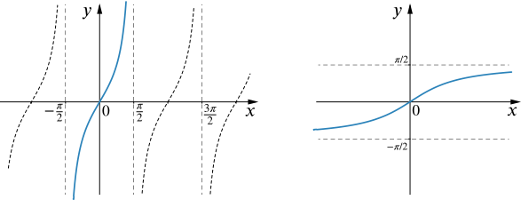
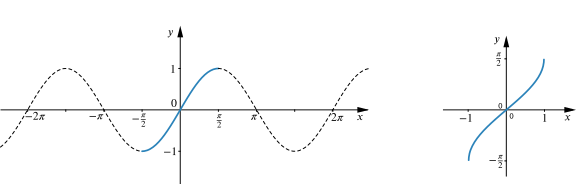
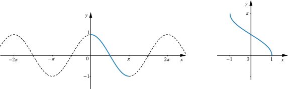

Imagine you were told that in triangle ABC, the side opposite C has length 5cm, the side opposite A has length 3cm and angle A=π6. Think about how you would calculate angle C.
At some point in your calculation you might obtain sinC=56, but what exactly does this tell you about C?
You may have heard of inverse trigonometric functions, such as arcsinx or sin−1x or the phrase “inverse sine”. In principle, inverse trigonometric functions should be functions that undo the effects of functions such as sinx, cosx and tanx. But we need to be careful because these functions are are not one-to-one; in fact they are periodic, so for instance there are infinitely many values of x that give the same value of sinx.
You might wonder where the names such as ‘arcsin’ come from.
Recall that in a circle of radius r, the arc length subtended by an angle θ radians has length rθ. So on a unit circle the length of an arc and the size of the angle which subtends it are equal. This is probably where the words come from.
Please note that arcsin and sin−1 mean the same thing and both are widely used in books and online, but note that sin−1x is not the same as 1sinx! Similarly, arccos means the same as cos−1, and arctan means the same as tan−1. We’ll use arctan, arccos and arcsin in this resource.
Although we started with a situation where we were thinking about an inverse for sinx, we’ll think briefly about tanx first before moving back to sinx and cosx. Some of the issues that arise for an inverse of tanx also arise for sinx and cosx, but we’ll see that we have to be even more careful for these functions.
Recall from Making inverse functions that if we want to produce an inverse for a many-to-one function, we need to restrict the domain so that the function is one-to-one on its restricted domain. We also need the range of the restricted function to be the same as the range of the original function.
So for tanx,
How could we restrict the domain to make the function one-to-one whilst keeping its range unchanged?
Is there more than one way to do this?
The function tanx is periodic with period π. Restricting the domain to any one period will not change the range of the function.
From the graph of y=tanx we can see that the function is always increasing. If we choose a domain between two adjacent asymptotes, such as the interval(−π2,π2), the function will be one-to-one and its range will still include all real numbers.
We could choose any interval of the form ((2n−1)π2,(2n+1)π2) for integer values of n, but it seems most natural to choose the interval that includes zero.
The following graphs shows how we could restrict the domain of tanx and the resulting function arctanx.

So although the equation tanx=3⎯⎯√ has infinitely many solutions, we say arctan3⎯⎯√ has the single value π3, and this is called the principal value for the equation tanx=3⎯⎯√. It is the value of x in the interval (−π2,π2) such that tanx=3⎯⎯√. The interval (−π2,π2) is known as the principal value range of the function arctan.
We can use the symmetry and periodicity of the tanx graph to express all solutions of tanx=3⎯⎯√ in terms of arctan3⎯⎯√.
We’ll now return to thinking about sinx and cosx.
The period of sinx is 2π, but within any interval of length 2π, there are two values of x that give the same value of sinx. In other words, sinx is not one-to-one or injective over its period. So in order to define an inverse we need to restrict to a smaller interval.
If we restrict the domain of sinx to the interval [−π2,π2], then the resulting function is one-to-one and its range is the same as that of the unrestricted function. Its inverse is arcsinx which has domain [−1,1].

What is arcsin0.5?
What about arcsin(−0.5)?
The situation for cosx is very similar to that for sinx but we need to restrict to a different interval.
If we restrict the domain of cosx to [0,π], then the range is still [−1,1] and cosx is now one-to-one. We use this domain to define arccosx with domain [−1,1] and range [0,π]. Note that both cosx (restricted to this domain) and arccosx are decreasing functions.

What is arccos0.5?
What about arccos(−0.5)?
So arctana, arcsina and arccosa give the principal values for the equations tanx=a, sinx=a and cosx=a respectively, and we can work from these to find all possible solutions. You can see more about this in General solutions and in Inverse or not?.
Going back to our original triangle problem, we had sinC=56. The inverse function will give us the principal value (in radians) as
C=arcsin56≈0.985.
But there is more than one value of C that would satisfy our equation. We must always consider other possibilities when using inverse trigonometric functions.
Since we are talking about an angle in a triangle we need only consider values in the interval [0,π]. There is one more possible value which is